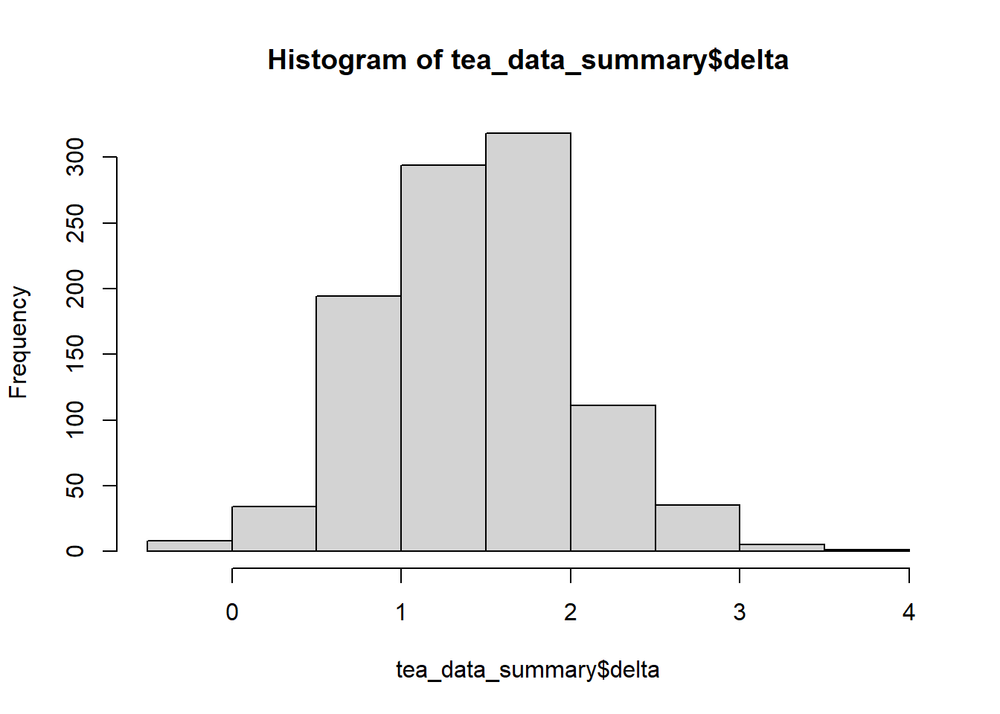
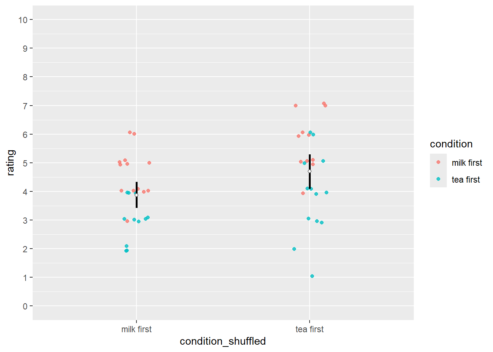
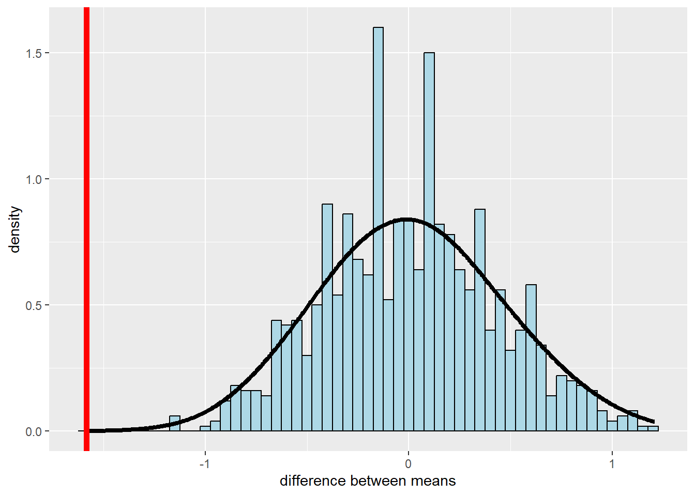
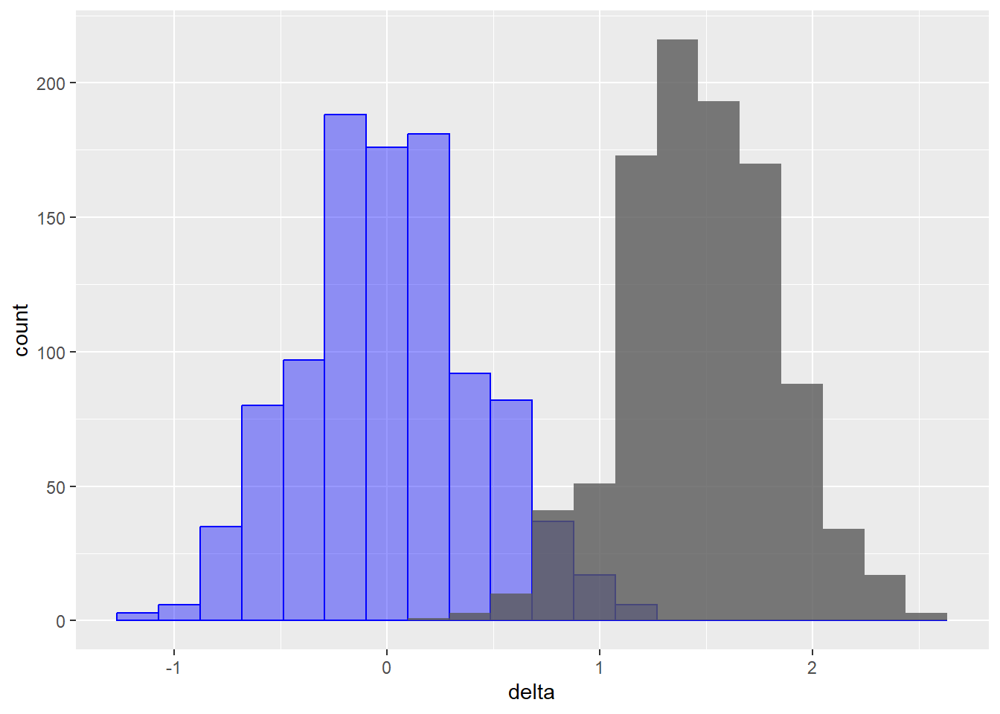
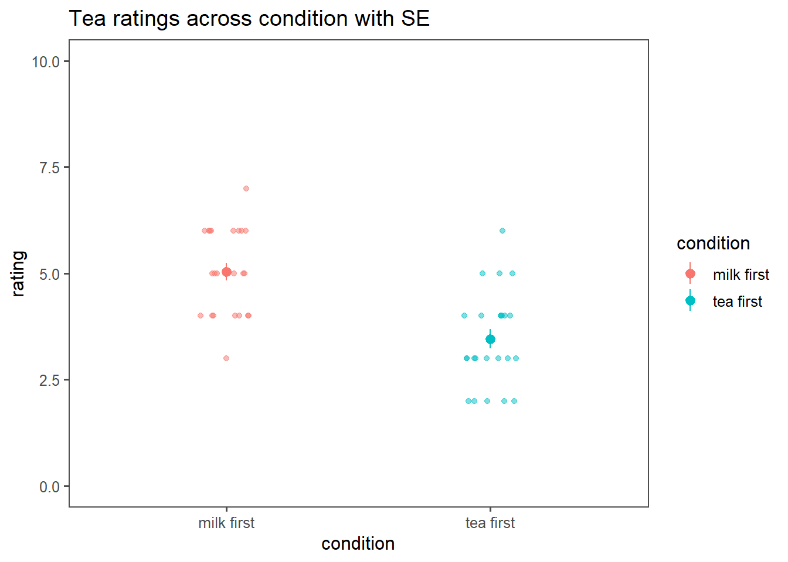
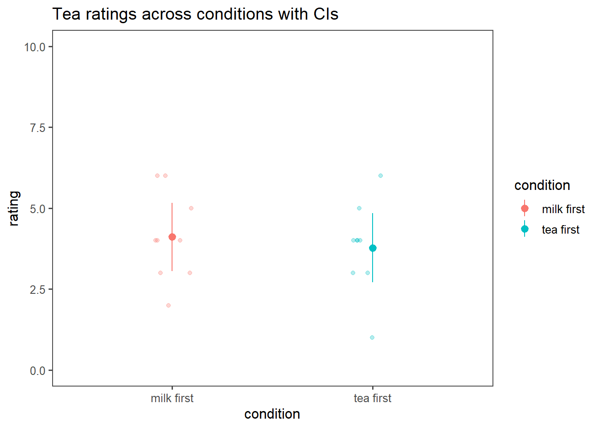
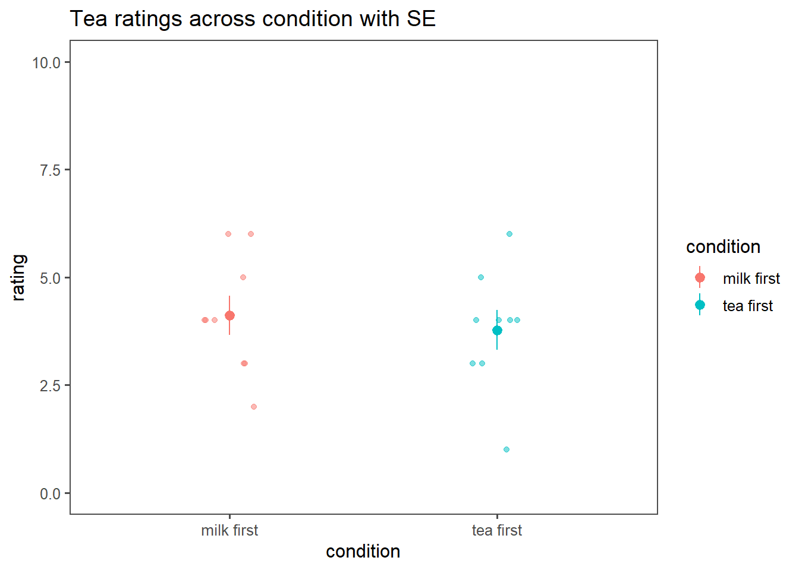

set.seed(123) # good practice to set a random seed, or else different runs get you different resultsInference Simulations
Tips before getting started
This is a document made to accompany some simulations for the Inference workshop in Psych 201a. The goal of this document is to continue learning in R/tidyverse but also to gain hands on experience simulating and manipulating data.
If you need to install something, you can run install.packages('tidyverse'), where you substitute the name of the library
You should have this repository cloned on your computer.
To understand what a function does, type ? [function_name] where function_name refers to a function name in a loaded repository.
You can open this in RStudio – there are so few packages it should work despite variations in environments
Setup
Import the libraries
# you can run install.packages('tidyverse')
library(tidyverse)── Attaching core tidyverse packages ──────────────────────── tidyverse 2.0.0 ──
✔ dplyr 1.1.4 ✔ readr 2.1.5
✔ forcats 1.0.0 ✔ stringr 1.5.1
✔ ggplot2 3.5.1 ✔ tibble 3.2.1
✔ lubridate 1.9.4 ✔ tidyr 1.3.1
✔ purrr 1.0.2
── Conflicts ────────────────────────────────────────── tidyverse_conflicts() ──
✖ dplyr::filter() masks stats::filter()
✖ dplyr::lag() masks stats::lag()
ℹ Use the conflicted package (<http://conflicted.r-lib.org/>) to force all conflicts to become errorslibrary(ggplot2) # plotting
library(ggthemes) # good for making plots prettyPart 1: Simulating experimental data
Define the simulation function
This makes “tea data”, a tibble (dataframe) where there are a certain number of people in each condition (default = 48, i.e., n_total, with n_total/2 in each half)
The averages of the two conditions are separated by a known effect (“delta”) with some variance (“sigma”). You can change these around since we’re simulating data!
So, here, DELTA is the difference is the tea ratings, on average, between the two conditions, in likert scale points. For simplicity, the scale is from 1-10.
make_tea_data <- function(n_total = 48,
sigma = 1.25, # sd of the distribution
delta = 1.5) { # difference between distributions
n_half <- n_total / 2 # half of the total subjects = #/n subs per condition
tibble(condition = c(rep("milk first", n_half), rep("tea first", n_half)),
rating = c(round(
rnorm(n_half, mean = 3.5 + delta, sd = sigma)
),
round(rnorm(
n_half, mean = 3.5, sd = sigma
)))) |>
mutate(rating = if_else(rating > 10, 10, rating), # random sampling could mean the scale gets out of range
# truncate if greater than max/min of rating scale
rating = if_else(rating < 1, 1, rating))
}Make data frames where we have small or larger samples of tea data for ONE experiment
# here's, we're calling our custom function, and specifying different inputs than the defaults (which are inside the parenthese up above)
tea_data <- make_tea_data(n_total = 18, delta = .5)Now, make a new data frame (call it tea_data_highn) with an N of 48, or something higher if you want. You need to call the custom function.
To do: OK, look at these data How long are they, what are the column names? Look at them in your console by copy and pasting the variable names into R.
Call summary(tea_data) and look at the outputs. Call head(tea_data) to look at the first few rows.
To do: Write basic tidyverse code to calculate the mean of each condition (hint: use group_by and summarize).
tea_data_highn= make_tea_data(n_total=48)
summary(tea_data_highn) #length=48 (N of participants) condition rating
Length:48 Min. :2.00
Class :character 1st Qu.:3.00
Mode :character Median :4.00
Mean :4.25
3rd Qu.:5.00
Max. :7.00 head(tea_data_highn) #column names = "condition", "rating"# A tibble: 6 × 2
condition rating
<chr> <dbl>
1 milk first 6
2 milk first 4
3 milk first 4
4 milk first 5
5 milk first 4
6 milk first 4tea_data_highn$condition = as.factor(tea_data_highn$condition)
tea_data_highn %>%
group_by(condition) %>%
summarize (
average_rating = mean(rating)
)# A tibble: 2 × 2
condition average_rating
<fct> <dbl>
1 milk first 5.04
2 tea first 3.46In this first draw, was it significant with N=9 or N=24 per group?
OK, we can do t-tests already! I’ve done these within a pipe (whoops, I often use the old pipe %>% operator which is the same as |> , don’t mind this difference.
To do: Run these and look at the outputs by posting out_low_n in the console and `out_low_h in the console.
R practice: Use the $ operator and then press tab to see how you can get specific values (i.e., the t or p value) from the outputs.
Try writing the outputs of the t-test in a reproducible report style paragraph.
out_low_n <- tea_data %>%
t.test(rating ~ condition, data = ., var.equal = TRUE)
#out_low_n= t.test(rating ~ condition, data = tea_data, var.equal = TRUE)
out_high_n <- tea_data_highn %>%
t.test(rating ~ condition, data = ., var.equal = TRUE) print(out_low_n)
Two Sample t-test
data: rating by condition
t = 0.51261, df = 16, p-value = 0.6152
alternative hypothesis: true difference in means between group milk first and group tea first is not equal to 0
95 percent confidence interval:
-1.045159 1.711825
sample estimates:
mean in group milk first mean in group tea first
4.111111 3.777778 print(out_high_n)
Two Sample t-test
data: rating by condition
t = 5.2133, df = 46, p-value = 4.283e-06
alternative hypothesis: true difference in means between group milk first and group tea first is not equal to 0
95 percent confidence interval:
0.9719949 2.1946718
sample estimates:
mean in group milk first mean in group tea first
5.041667 3.458333 Outputs of the t-test in a reproducible report style: For the the difference between the two groups was not statistically significant when the sample size is 9 (t(16) = 0.51, p = .615, d = 0.24), whereas the difference between the two groups was statistically significant (t(46) = 3.15, p = .003, d = 0.91).
library(apa)Warning: package 'apa' was built under R version 4.4.3apa= t_apa(out_low_n)t(16) = 0.51, p = .615, d = 0.24apa_highn= t_apa(out_high_n)t(46) = 5.21, p < .001, d = 1.50Simulate 1000 experiments
Now let’s simulate 1000 experiments…where you have 18 participants per experiment with an average difference of 1.5 points in tea deliciousness on average
Below is kind of annoying and complex tidyverse, so I’m doing it for you. I’d have to look this up how to do it.
samps <- tibble(sim = 1:1000) |>
mutate(data = map(sim, \(i) make_tea_data(n_total = 18, delta = 1.5))) |> # simulate
unnest(cols = data) # wrangleOK, copy this but now change it so that you 48 participants per experiment
samps_highn <- tibble(sim = 1:1000) |>
mutate(data = map(sim, \(i) make_tea_data(n_total = 48, delta = 1.5))) |> # simulate
unnest(cols = data) # wrangleSummarize both of these simulations
Here, we take these simulated experiments, group by sim and condition, and summarize the average ratings per experiment.
Then, for each experiment, calculate the mean difference between the milk first vs. tea first conditions.
To do: Comment what each line of code is doing to check your understanding, and talk to a partner about it.
Bonus: Figure out a way to do this that is better than I what I did (some mix of base R and tidyverse, I’m sure there’s a tidyverse only way)
#Apply the operations below on samps data and save it into tea_data_summary
tea_data_summary <- samps |>
group_by(sim, condition) |> #group by simulation and the condition
summarise(mean_rating = mean(rating)) |> #for each group_by variable, calculate the mean rating
group_by(sim) |> #group by simulation
summarise(delta = mean_rating[condition == "milk first"] -
mean_rating[condition == "tea first"]) #for each group_by variable, calculate the differences in mean ratings (subtract the mean rating in "tea first" condition from the mean rating in "milk first" condition)`summarise()` has grouped output by 'sim'. You can override using the `.groups`
argument.head(tea_data_summary)# A tibble: 6 × 2
sim delta
<int> <dbl>
1 1 1.44
2 2 1.78
3 3 1.56
4 4 1.33
5 5 0.556
6 6 1.44 #Apply the same as operations above on samps_highn data and save it into tea_data_highn_summary
tea_data_highn_summary <- samps_highn |>
group_by(sim, condition) |>
summarise(mean_rating = mean(rating)) |>
group_by(sim) |>
summarise(delta = mean_rating[condition == "milk first"] -
mean_rating[condition == "tea first"])`summarise()` has grouped output by 'sim'. You can override using the `.groups`
argument.head(tea_data_highn_summary)# A tibble: 6 × 2
sim delta
<int> <dbl>
1 1 1.42
2 2 1.25
3 3 1.67
4 4 1.38
5 5 1.04
6 6 1.12Plot difference for low-n
Let’s make a plot to plot the differences in ratings across conditions for the low-n condition. You’ll need to use ggplot or hist
hist(tea_data_summary$delta)
Plot difference for higher-n
To do: What’s different about this distribution vs the one we just plotted?
hist(tea_data_highn_summary$delta)
Bonus What happens if you run it again, but this time try changing the variance / mean of the effect when you change the delta and sigma values in the data simulation.
What happens if you vary the random seed? How much does this change what you find?
Part 2: Simulating the null distribution
(STOP HERE AND PAUSE FOR GROUP DISCUSSION)
Visualizing the null distribution. How can we actually visualize the NULL hypothesis and distribution? It’s a little tricky, but we can rely on simulation to help us.
Method 1: Simulation
First, do the same thing as you did before - simulating 1000 experiments – but NOW simulate no differences between conditions. Remember, it’s the null model because DELTA (i.e., differences in conditions) is ZERO. Keep these dataframes - we will use them later for estimating p-values
samps_zero <- tibble(sim = 1:1000) |>
mutate(data = map(sim, \(i) make_tea_data(n_total = 18, delta = 0))) |> # simulate
unnest(cols = data) # wrangletea_data_zero_summary <- samps_zero |>
group_by(sim, condition) |>
summarise(mean_rating = mean(rating)) |>
group_by(sim) |>
summarise(delta = mean_rating[condition == "milk first"] -
mean_rating[condition == "tea first"])`summarise()` has grouped output by 'sim'. You can override using the `.groups`
argument.head(tea_data_zero_summary)# A tibble: 6 × 2
sim delta
<int> <dbl>
1 1 0.111
2 2 0.444
3 3 0.111
4 4 0.222
5 5 1.22
6 6 1.89 Visualize what this null distribution actually looks like.
hist(tea_data_zero_summary$delta)
Method 2: Shuffling
We can also calculate the distribution of the difference between conditions when we’ve shuffled the condition labels. This is referred to as the empirical null hypothesis (our H0, since we’re comparing two conditions with a two-sample t-test)
Let’s shuffle the labels within each experiment
tea_data_highn_shuffled <- samps_highn %>%
group_by(sim) %>% # for each experiment
mutate(condition_shuffled = sample(condition)) # shuffle the condition labels, handy function here.To do: check you understanding – what is “sim” here?
tea_data_highn_shuffled_summary <- tea_data_highn_shuffled %>%
group_by(condition_shuffled, sim) %>% #'sim' is each simulation - each simulated experiment.
summarize(mean_rating = mean(rating),
sd = sd(rating)) `summarise()` has grouped output by 'condition_shuffled'. You can override
using the `.groups` argument.# overwrites this variable
tea_data_highn_shuffled_summary <- tea_data_highn_shuffled_summary %>%
group_by(sim) |>
summarise(delta = mean_rating[condition_shuffled == "milk first"] -
mean_rating[condition_shuffled == "tea first"])To do: what does this histogram look like and why?
hist(tea_data_highn_shuffled_summary$delta) #what does this histogram look like?
# This histogram looks like a normal distribution with M=0. It looks like it's normally distributed because we simulated 1000 expeirments, and it looks like it's M=0, because we simulated the null hypothesis, where there is no difference between the two groups.Visualizing what happens when we shuffle
OK, now see what happens to our raw data – this is just from one simulation The color refers to the ORIGINAL label before we shuffled, but our condition difference is gone
The color refers to the ORIGINAL condition The x-axis refers to the SHUFFLED condition
ggplot(data = tea_data_highn_shuffled %>% filter(sim==3), # can change the actual simulation number here
mapping = aes(x = condition_shuffled, y = rating))+
geom_point(mapping = aes(color = condition), # color
alpha=.8,
position = position_jitter(height = .1,
width = 0.1)) +
stat_summary(fun.data = mean_cl_boot, # this boostraps the confidence interval
geom = "linerange",
size = 1) +
stat_summary(fun = "mean", # this calculates the average
geom = "point",
shape = 21,
color = "black",
fill = "white") +
scale_y_continuous(breaks = 0:10,
labels = 0:10,
limits = c(0, 10))Warning: Using `size` aesthetic for lines was deprecated in ggplot2 3.4.0.
ℹ Please use `linewidth` instead.
The idea is now that we can get a sampling distribution of the difference in the means between the two conditions (assuming that the null hypothesis were true), by randomly shuffling the labels and calculating the difference in means (and doing this many times).
What we get is a distribution of the differences we would expect, if there was no effect of condition.
First, let’s calculate the actual difference in a simulated dataset where there was an effect
difference_actual = tea_data_highn %>% # in ONE experiment
group_by(condition) %>%
summarize(mean = mean(rating)) %>%
pull(mean) %>%
diff()Plot the distribution of the differences across all of our shuffled iterations
And in red – is the numerical value from when there was an effect (because we simulated it that way)
ggplot(data = tea_data_highn_shuffled_summary, aes(x=delta)) +
geom_histogram(aes(y = stat(density)),
color = "black",
fill = "lightblue",
binwidth = 0.05) +
stat_density(geom = "line",
size = 1.5,
bw = 0.2) +
geom_vline(xintercept = difference_actual, color = "red", size = 2) +
labs(x = "difference between means") Warning: `stat(density)` was deprecated in ggplot2 3.4.0.
ℹ Please use `after_stat(density)` instead.
And we can THEN calculate the p-value by using some basic data wrangling – it is defined as the proportion of condition differences (treatment - control) that were as or more extreme than the one we observed.
If this feels tough, don’t worry - we will go over these concepts more again on Friday!
tea_data_highn_shuffled_summary %>%
summarize(p_value = sum(delta <= difference_actual)/n())# A tibble: 1 × 1
p_value
<dbl>
1 0You can also see this if you plot the distributions of the null vs empirical simulations next to each other (blue = null, which is appropriately centered at zero. This should remind you of the cohen’s d web app we looked at!)
ggplot(data=tea_data_highn_shuffled_summary, aes(x=delta)) +
geom_histogram(alpha=.4, bins=20, color='blue', fill='blue') +
geom_histogram(alpha=.8, bins=20, data=tea_data_highn_summary)
Part 3: Calculating confidence intervals
(STOP HERE AND PAUSE FOR GROUP DISCUSSION)
Honestly, I doubt you will get this far in lab – but if you do, there are two extra pieces of material that are I think are foundational material.
Confidence intervals
Here, I want to show you how you WOULD calculate a CI by hand. In practice, I never do this. But it’s useful to see how it could be done.
Get the data
Taking one high_n experiment for now
#tea_dataset = tea_data_highn
tea_dataset = tea_data_highntea_ratings <- filter(tea_dataset, condition == "tea first")$rating
milk_ratings <- filter(tea_dataset, condition == "milk first")$rating
# could also do in a pipe like so, but then you have to grab the column below, as in tea_ratings$ratings; above is a vector
# tea_ratings <- tea_data_highn %>%
# filter(condition=="tea first") %>%
# select(rating)Calculate a CI on the effect (difference between conditions)
First we’re going to calculate a CI by hand.
n_tea <- length(tea_ratings)
n_milk <- length(milk_ratings)
sd_tea <- sd(tea_ratings)
sd_milk <- sd(milk_ratings)
tea_sd_pooled <- sqrt(((n_tea - 1) * sd_tea ^ 2 + (n_milk - 1) * sd_milk ^ 2) /
(n_tea + n_milk - 2))
tea_se <- tea_sd_pooled * sqrt((1 / n_tea) + (1 / n_milk))
delta_hat <- mean(milk_ratings) - mean(tea_ratings)
tea_ci_lower <- delta_hat - tea_se * qnorm(0.975)
tea_ci_upper <- delta_hat + tea_se * qnorm(0.975)To get the 95% CI with the t-distribution, you need to get the appropriate t-statistic from the distribution, which incorporates information about the degrees of freedom
The t-distribution is more appropriate when you have smaller sample sizes and is what is used in t.tests
num_observations = length(tea_dataset$rating)
df = num_observations-2 # for two sample t.test
tea_ci_lower_ttest <- delta_hat - tea_se * qt(0.975,df)
tea_ci_upper_ttest <- delta_hat + tea_se * qt(0.975,df)
tea_ci_lower_ttest[1] 0.9719949tea_ci_upper_ttest[1] 2.194672The above code does this by hand - but it’s to show you what this function is doing under the hood.
# Now the calculated CIs match those in the t-test outputs!
t.test(tea_ratings, milk_ratings, var.equal=TRUE)
Two Sample t-test
data: tea_ratings and milk_ratings
t = -5.2133, df = 46, p-value = 4.283e-06
alternative hypothesis: true difference in means is not equal to 0
95 percent confidence interval:
-2.1946718 -0.9719949
sample estimates:
mean of x mean of y
3.458333 5.041667 Ploting CIs by hand for each condition
Also plot the SEs, and visualize how they’re different
confidence_level=.95 # you can change this
# this formula below gives the critical t-value (as opposed to simply taken from the normal distribution)
# qt(1 - (1 - confidence_level)/2, df = n - 1)
tea_data_highn_summary_cis <- tea_data_highn %>%
group_by(condition) %>%
summarize(cond_mean = mean(rating), cond_sd = sd(rating), n=length(rating)) %>%
mutate(error = qt(1 - (1 - confidence_level)/2, df = n - 1)* (cond_sd/sqrt(n))) %>% # this calculates CIs WITHIN each condition
mutate(ci_upper = cond_mean + error, ci_lower = cond_mean - error) %>%
mutate(se_upper = cond_mean + cond_sd/sqrt(n), se_lower = cond_mean - cond_sd/sqrt(n))Between subjects experiment – lots of variability! I like to visualize the raw datas as well as the mean and CIs
ggplot(data = tea_data_highn, aes(x=condition, y=rating, col=condition)) +
geom_jitter(width=.1, height=0, alpha=.3) + # visualizes all the raw data, with no variation in y-axis jitter
theme_few() +
geom_pointrange(data = tea_data_highn_summary_cis, aes(x=condition, y = cond_mean, ymin = ci_lower, ymax = ci_upper)) +
ylim(0,10) +
ggtitle('Tea ratings across conditions with CIs')
ggplot(data = tea_data_highn, aes(x=condition, y=rating, col=condition)) +
geom_jitter(width=.1, height=0, alpha=.5) + # visualizes all the raw data, with no variation in y-axis jitter
theme_few() +
geom_pointrange(data = tea_data_highn_summary_cis, aes(x=condition, y = cond_mean, ymin = se_lower, ymax = se_upper)) +
ylim(0,10) +
ggtitle('Tea ratings across condition with SE')
To do: What does each dot represent? What does the range represent in each graph? What does the confidence interval indicate? What does the SE indicate?
The transparent dots represent single datapoint from each experiment per each condition. The saturated datapoint represents sample mean of each condition. The range represents how uncertain the estimation (sample mean) is. Standard error refers to the variability(uncertainty) of the sample mean by calculating the standard deviation of the sampling distribution calculated from the observed sample, whereas the confidence interval also takes level of confidence (e.g. 95%) into account, calculating the range that is likely to include the estimation (sample mean) at the level of set confidence (e.g. 95%).
To do: how does this change when you use the low-n experiment?
The trend shown in high-n experiment is not shown anymore in the low-n experiment dataset. That is, the differences between the two groups does not look significant, and both the confidence interval and Standard Error of the two groups looks highly overlapping between the two conditions.
tea_dataset_low = tea_data
tea_ratings_low <- filter(tea_dataset_low, condition == "tea first")$rating
milk_ratings_low <- filter(tea_dataset_low, condition == "milk first")$ratingn_tea <- length(tea_ratings_low)
n_milk <- length(milk_ratings_low)
sd_tea <- sd(tea_ratings_low)
sd_milk <- sd(milk_ratings_low)
tea_sd_pooled <- sqrt(((n_tea - 1) * sd_tea ^ 2 + (n_milk - 1) * sd_milk ^ 2) /
(n_tea + n_milk - 2))
tea_se <- tea_sd_pooled * sqrt((1 / n_tea) + (1 / n_milk))
delta_hat <- mean(milk_ratings) - mean(tea_ratings)
tea_ci_lower <- delta_hat - tea_se * qnorm(0.975)
tea_ci_upper <- delta_hat + tea_se * qnorm(0.975)num_observations = length(tea_dataset$rating)
df = num_observations-2 # for two sample t.test
tea_ci_lower_ttest <- delta_hat - tea_se * qt(0.975,df)
tea_ci_upper_ttest <- delta_hat + tea_se * qt(0.975,df)
tea_ci_lower_ttest[1] 0.2744256tea_ci_upper_ttest[1] 2.892241confidence_level=.95 # you can change this
# this formula below gives the critical t-value (as opposed to simply taken from the normal distribution)
# qt(1 - (1 - confidence_level)/2, df = n - 1)
tea_data_lown_summary_cis <- tea_data %>%
group_by(condition) %>%
summarize(cond_mean = mean(rating), cond_sd = sd(rating), n=length(rating)) %>%
mutate(error = qt(1 - (1 - confidence_level)/2, df = n - 1)* (cond_sd/sqrt(n))) %>% # this calculates CIs WITHIN each condition
mutate(ci_upper = cond_mean + error, ci_lower = cond_mean - error) %>%
mutate(se_upper = cond_mean + cond_sd/sqrt(n), se_lower = cond_mean - cond_sd/sqrt(n))ggplot(data = tea_data, aes(x=condition, y=rating, col=condition)) +
geom_jitter(width=.1, height=0, alpha=.3) + # visualizes all the raw data, with no variation in y-axis jitter
theme_few() +
geom_pointrange(data = tea_data_lown_summary_cis, aes(x=condition, y = cond_mean, ymin = ci_lower, ymax = ci_upper)) +
ylim(0,10) +
ggtitle('Tea ratings across conditions with CIs')
ggplot(data = tea_data, aes(x=condition, y=rating, col=condition)) +
geom_jitter(width=.1, height=0, alpha=.5) + # visualizes all the raw data, with no variation in y-axis jitter
theme_few() +
geom_pointrange(data = tea_data_lown_summary_cis, aes(x=condition, y = cond_mean, ymin = se_lower, ymax = se_upper)) +
ylim(0,10) +
ggtitle('Tea ratings across condition with SE')
To do: Find the shortcut ggplot function so you don’t have to calculate these by hand ever again :)
We can use geom_errorbar() function from ggplot2.
Part 4: Simulating p-values across multiple experiments
To do: Comment what the lines of code are doing ### When there is no actual effect
all_results=tibble()
for (this_sim in 1:1000) {
this_experiment = null_model %>%
filter(sim==this_sim)
tea_ratings <- filter(this_experiment, condition == "tea first")$rating
milk_ratings <- filter(this_experiment, condition == "milk first")$rating
output = t.test(tea_ratings, milk_ratings)
this_exp_output = tibble(pvalue = output$p.value)
all_results = bind_rows(all_results, this_exp_output)
}To do: Look at the distribution of p-values (hint: in all_results$pvalue)
Make a histogram
What is the distribution of p-values when the null is true?
Calculate the proportion of p-values that are less than .05 What was our false positive rate?
# you'll need all_results$pvalue
hist(all_results$pvalue)Now for an experiment when there is actually an effect
all_results_high_n=tibble()
for (this_sim in 1:500) {
this_experiment = samps_highn %>%
filter(sim==this_sim)
tea_ratings <- filter(this_experiment, condition == "tea first")$rating
milk_ratings <- filter(this_experiment, condition == "milk first")$rating
output = t.test(tea_ratings, milk_ratings, paired = FALSE, var.equal = TRUE)
this_exp_output = tibble(pvalue = output$p.value)
all_results_high_n = bind_rows(all_results_high_n, this_exp_output)
}How often did we fail to reject the null hypothesis? When was our p-value greater than p=.05? What does the distribution of p-values look like?
```{R} # you’ll need all_results_high_n$pvalue ````
Excercises
Now go back (earlier in the code) and modify the DELTA in the simulation functions to be smaller so that there is only a small difference between groups. Is it still significant?
Rewrite this code with the the smaller sample size simulations. What changes?